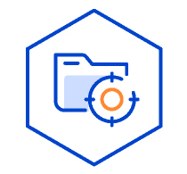
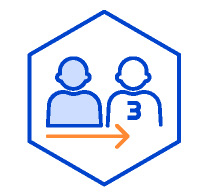

분야별 통계
- 해양수산통계
- 분야별 통계
해양수산부는 정보주체의 자유와 권리 보호를 위해 「개인정보 보호법」 및 관계 법령이 정한 바를 준수하여, 적법하게 개인정보를 처리하고 안전하게 관리하고 있습니다. 이에「개인정보 보호법」 제30조에 따라 정보주체에게 개인정보 처리에 관한 절차 및 기준을 안내하고, 이와 관련한 고충을 신속하고 원활하게 처리할 수 있도록 하기 위하여 다음과 같이 개인정보 처리방침을 수립·공개 합니다.
주요 개인정보 처리 표시(라벨링)
-
-
일반 개인정보, 고유식별정보 수집
-
해양수산부는 대국민 서비스 제공 및 민원처리, 소관업무 수행 등의 목적으로 필요에 의한 최소한으로 개인정보를 수집하고 있습니다.
-
-
-

개인정보의 처리목적
-
해양수산부는 대국민 서비스 제공 및 민원처리, 소관업무 수행 등의 목적으로 필요에 의한 최소한으로 개인정보를 수집하고 있습니다.
-
-
-
개인정보의 보유 기간
-
해양수산부는 법령에 따른 개인정보 보유·이용기간 또는 정보주체로부터 개인정보를 수집 시에 동의 받은 개인정보 보유·이용기간 내에서 개인정보를 처리하고 보유합니다.
-
-
-

개인정보의 제공
-
해양수산부는 법적근거에 따라 개인정보의 제3자 제공을 하고 있으며, 세부사항은 처리방침 본문에서 확인하실 수 있습니다.
-
-
-
처리위탁
-
원활한 개인정보 처리업무를 위하여 다음과 같이 개인정보 처리업무를 위탁하고 있습니다. 세부사항은 처리방침 본문에서 확인하실 수 있습니다.
-
-
-
고충처리부서
-
시스템문의 044-200-5497
(월~금 9:00~18:00, 공휴일 제외)
-
※ 자세한 사항은 아래의 개인정보처리방침을 확인하시기 바랍니다.
목차
개인정보처리의 목적
-
1해양수산부는 대국민 서비스 제공 및 민원처리, 소관업무 수행 등의 목적으로 필요에 의한 최소한으로 개인정보를 수집하고 있습니다.
-
2해양수산부에서 처리하고 있는 개인정보는 수집 목적 이외의 용도로는 이용되지 않으며, 이용 목적이 변경되는 경우에는「개인정보보호법」제18조에 따라 별도의 동의를 받는 등 필요한 조치를 이행할 예정입니다.
-
3해양수산부가 개인정보 보호법 제32조에 따라 등록·공개하는 개인정보파일의 처리목적은 다음과 같습니다.
개인정보의 처리 및 보유 기간
-
1해양수산부는 법령에 따른 개인정보 보유·이용기간 또는 정보주체로부터 개인정보를 수집 시에 동의 받은 개인정보 보유·이용기간 내에서 개인정보를 처리하고 보유합니다.
-
2개인정보 보호법 제32조에 따라 등록·공개하는 개인정보파일의 처리 및 보유 기간은 다음과 같습니다.
처리하는 개인정보의 항목
-
1해양수산부에서 처리하는 개인정보는 소관업무 및 법령에서 정한 최소한의 개인정보만을 처리하며 자세한 사항은 해당 홈페이지에 게재하여 정보주체가 확인할 수 있도록 안내를 하고 있습니다.
개인정보파일 등록 현황
-
1개인정보 보호법 제32조에 따라 등록·공개하는 개인정보파일의 처리목적?보유기간 및 수집항목은 개인정보파일의 특성에 따라 달리 규정하고 있으며, 개인정보파일별 상세한 내용은 개인정보 포털(www.privacy.go.kr)을 통해 확인하시기 바랍니다.
개인정보 영향평가 수행 결과
-
1해양수산부는 운영하고 있는 개인정보 처리시스템이 정보주체의 개인정보파일에 미칠 영향에 대해 조사, 분석, 평가하기 위해 ?개인정보 보호법? 제33조에 따라 “개인정보 영향평가”를 받고 있습니다.
-
2해양수산부는 다음 개인정보파일에 대해 영향평가를 수행하였습니다.
| 개인정보 처리시스템 | 개인정보파일명 | 개인정보 항목 | 영향평가 수행 | 후속조치 (이행확인서 제출일) |
|---|---|---|---|---|
| 수산정보통합시스템 | 전자어업허가증 신청정보 | 일반, 고유식별 | ’15, ’20 | ’21.5.27. |
| 어선 정보 | 일반, 고유식별 | |||
| 어업인허가정보 | 일반, 고유식별 | |||
| 선박 출입항 정보 | 일반, 고유식별 | |||
| 수산물 위탁판매 정보 | 고유식별 | |||
| 어업경영체 정보 | 일반, 고유식별 | |||
| 수산직접지불 신청자 정보 | 일반, 고유식별 | |||
| 양식어업 정보 | 일반, 고유식별 | |||
| 어촌 어항 정보 | 일반 | |||
| 낚시어선 승선자 관리 | 일반, 고유식별 | |||
| 연근해 어업실태 정보 | 일반 | |||
| 해운항만물류정보시스템 | 구명정조종사자격증발급 | 일반, 고유식별 | '18 | '19.6.11. |
| 해기사면허 교부 및 갱신 | 일반, 고유식별 | |||
| 선원수첩 및 선원신분증명서 | 일반, 고유식별 | |||
| 선원 승하선 공인 및 승무경력 | 일반, 고유식별 | |||
| 해상화물운송사업등록 | 일반 | '23 | '23.2.15. | |
| 선박등록 | 일반, 고유식별 | |||
| 선원 승하선 공인 및 승무경력 | 일반, 고유식별 |
민감정보의 공개 가능성 및 비공개를 선택하는 방법
-
해양수산부는 서비스를 제공하는 과정에서 공개되는 정보에 정보주체의 민감정보가 포함됨으로써 사생활 침해의 위험성이 있다고 판단하는 때에는 서비스의 제공 전에 민감정보의 공개 가능성 및 비공개를 선택하는 방법을 지체없이 본 개인정보 처리방침을 통하여 공개하도록 하겠습니다.
개인정보의 제3자 제공에 관한 사항
-
1해양수산부는 정보주체의 개인정보를 개인정보의 처리목적에서 명시한 범위 내에서만 처리하며, 정보주체의 동의, 법률의 특별한 규정 등 「개인정보 보호법」제17조 및 제18조에 해당하는 경우에만 개인정보를 제3자에게 제공하고 그 이외에는 정보주체의 개인정보를 제3자에게 제공하지 않습니다.
-
2해양수산부는 정보주체의 동의 또는 법률에 따라 다음과 같이 최소한의 범위로만 개인정보를 제3자에게 제공하고 있습니다.
개인정보 처리의 위탁에 관한 사항
-
1해양수산부는 개인정보 처리를 위탁하는 경우 홈페이지에 공개된 개인정보 처리방침을 통해 알릴 수 있으며, 각 소속기관도 해당 홈페이지에 게재하여 정보주체가 확인할 수 있도록 안내를 하고 있습니다.
-
2해양수산부는 위탁계약 체결시「개인정보 보호법」제26조에 따라 위탁업무 수행목적 외 개인정보 처리금지, 기술적ㆍ관리적 보호조치, 재위탁 제한, 수탁자에 대한 관리ㆍ감독, 손해배상 등 책임에 관한 사항을 계약서 등 문서에 명시하고, 수탁자가 개인정보를 안전하게 처리하는지를 감독하고 있습니다.
-
3위탁업무의 내용이나 수탁자가 변경될 경우에는 지체없이 본 개인정보 처리방침을 통하여 공개하도록 하겠습니다.
개인정보의 파기 절차 및 파기방법
-
1해양수산부는 개인정보 보유기간의 경과, 처리목적 달성 등 개인정보가 불필요하게 되었을 때에는 지체없이 해당 개인정보를 파기합니다.
-
2정보주체로부터 동의받은 개인정보 보유기간이 경과하거나 처리목적이 달성되었음에도 불구하고 다른 법령에 따라 개인정보를 계속 보존하여야 하는 경우에는, 해당 개인정보(또는 개인정보파일)를 별도의 데이터베이스(DB)로 옮기거나 보관장소를 달리하여 보존합니다.
-
3개인정보 파기의 절차 및 방법은 다음과 같습니다.
- 1. 파기절차
해양수산부는 파기하여야 하는 개인정보(또는 개인정보파일)에 대해 개인정보 파기계획을 수립하여 파기합니다. 해양수산부는 파기 사유가 발생한 개인정보(또는 개인정보파일)를 선정하고, 해양수산부의 개인정보 보호책임자의 승인을 받아 개인정보(또는 개인정보파일)를 파기합니다. -
2. 파기 방법
- 1) 전자적 형태의 정보는 기록을 재생할 수 없는 기술적 방법을 사용합니다.
- 2) 종이에 출력된 개인정보는 분쇄기로 분쇄하거나 소각을 통하여 파기합니다.
- 1. 파기절차
정보주체와 법정대리인의 권리·의무 및 그 행사방법에 관한 사항
-
1정보주체는 해양수산부에 대해 언제든지 개인정보 열람·정정·삭제·처리정지 요구 등의 권리를 행사할 수 있습니다.
- 1. 개인정보 열람요구
- 2. 오류 등이 있을 경우 정정 요구
- 3. 삭제요구
- 4. 처리정지 요구
-
※ 만 14세 미만 아동에 관한 개인정보의 열람 등 요구는 법정대리인이 직접 해야 하며, 만 14세 이상의 미성년자인 정보주체는 정보주체의 개인정보에 관하여 미성년자 본인이 권리를 행사하거나 법정대리인을 통하여 권리를 행사할 수도 있습니다.
-
2제1항에 따른 권리 행사는 해양수산부에 대해 개인정보보호법 시행령 제41조 제1항에 따라 서면, 전자우편, 모사전송(FAX) 등의 방법으로 요구 가능하고, 인터넷은 아래의 방법에 따라 요구할 수 있으며, 해양수산부는 이에 대해 지체 없이 조치하겠습니다.
-
개인서비스
-
정보주체 권리행사
-
개인정보 열람 등 요구
-
열람 등 요구
-
[개인정보파일 검색]을
통한 개인정보파일 선택 -
신청유형 선택
(개인정보 열람, 개인정보 정정ㆍ삭제, 개인정보 처리정지 중 택1) -
요구서 작성 후
민원청구
-
3제1항에 따른 권리 행사는 정보주체의 법정대리인이나 위임을 받은 자 등 대리인을 통하여 하실 수 있습니다. 이 경우「개인정보 처리 방법에 관한 고시」별지 제11호 서식에 따른 위임장을 제출하셔야 합니다.
-
4개인정보 열람 및 처리정지 요구는「개인정보보호법」제35조 제4항, 제37조 제2항에 의하여 정보주체의 권리가 제한 될 수 있습니다.
-
5개인정보의 정정 및 삭제 요구는 다른 법령에서 그 개인정보가 수집 대상으로 명시되어 있는 경우에는 그 삭제를 요구할 수 없습니다.
-
6해양수산부는 정보주체 권리에 따른 열람의 요구, 정정·삭제의 요구, 처리정지의 요구 시 열람 등 요구를 한 자가 본인이거나 정당한 대리인인지를 확인합니다.
개인정보의 안전성 확보조치에 관한 사항
해양수산부는 개인정보의 안전성 확보를 위해 다음과 같은 조치를 취하고 있습니다.
-
1관리적 조치
- - 내부 관리계획의수립 및 시행
- 개인정보의 안전한 처리를 위하여 내부관리계획을 수립하고 시행하고 있습니다.
- - 개인정보 취급직원의 최소화 및 교육
- 개인정보를 취급하는 직원은 반드시 필요한 인원에 한하여 지정ㆍ관리하고 있으며 취급직원을 대상으로 안전한 관리를 위한 교육을 실시하고 있습니다.
-
2기술적 조치
- - 개인정보관리시스템 등의 접근권한 관리
- 개인정보를 처리하는 개인정보처리시스템에 대한 접근 권한의 부여·변경·말소를 통하여 개인정보에 대한 접근통제를 위한 필요한 조치를 하고 있으며 침입차단시스템을 이용하여 외부로부터의 무단 접근을 통제하고 있습니다.
- - 접속기록의 보관
- 개인정보처리시스템에 접속한 기록을 1년(5만명 이상의 개인정보나, 고유식별정보, 민감정보 포함시 2년) 이상 보관·관리하고 있습니다.
- - 개인정보의 암호화
- 개인정보는 암호화 등을 통해 안전하게 저장 및 관리되고 있습니다. 또한 중요한 데이터는 저장 및 전송 시 암호화하여 사용하는 등의 별도 보안기능을 사용하고 있습니다.
- - 보안프로그램 설치 및 주기적 점검ㆍ갱신
- 해킹이나 컴퓨터 바이러스 등에 의한 개인정보 유출 및 훼손을 막기 위하여 보안프로그램을 설치하고 주기적으로 갱신·점검하고 있습니다.
-
3물리적 조치
- - 비인가자에 대한 출입 통제
- 개인정보를 보관하고 있는 개인정보처리시스템의 물리적 보관 장소를 별도로 두고 이에 대해 출입통제 절차를 수립·운영하고 있습니다.
개인정보를 자동으로 수집하는 장치의 설치ㆍ운영 및 그 거부에 관한 사항
해양수산부는 ‘쿠키(Cookie)’를 사용하며, 통계 분석 및 이용자와 웹사이트간의 원활한 의사소통을 위해 이용자의 IP주소, 접속국가, 유입경로, 브라우저, 방문일시가 자동적으로 수집·저장됩니다.
-
1해양수산부는 이용자에게 개별적인 맞춤서비스를 제공하기 위해 이용 정보를 저장하고 수시로 불러오는 ‘쿠키(cookie)’를 사용합니다.
-
2쿠키는 웹사이트를 운영하는데 이용되는 서버(http)가 이용자의 컴퓨터 브라우저에게 보내는 소량의 정보이며 이용자들의 PC 컴퓨터내의 하드디스크에 저장되기도 합니다.
- 가. 쿠키의 사용목적 : 이용자가 방문한 각 서비스와 웹 사이트들에 대한 방문 및 이용형태, 인기 검색어, 보안접속 여부 등을 파악하여 이용자에게 최적화된 정보 제공을 위해 사용됩니다.
-
나. 쿠키의 설치·운영 및 거부 : 웹브라우저 옵션 설정을 통해 쿠키 허용, 쿠키 차단 등의 설정을 할 수 있습니다.
- - Edge : 웹브라우저 우측 상단의 설정 메뉴 > 쿠키 및 사이트 권한 > 쿠키 및 사이트 데이터 관리 및 삭제
- - Chrome : 웹브라우저 우측 상단의 설정 메뉴 > 개인정보 및 보안 > 쿠키 및 기타 사이트 데이터
- - Whale : 웹브라우저 우측 상단의 설정 메뉴 > 개인정보 보호 > 쿠키 및 기타 사이트 데이터
- 다. 쿠키 저장을 거부할 경우 맞춤형 서비스 이용에 어려움이 발생할 수 있습니다.
가명정보 처리에 관한 사항
-
해양수산부는 수집한 개인정보를 특정 개인을 알아볼 수 없도록 가명 처리하여 통계작성, 과학적 연구, 공익적 기록보존 등을 위하여 처리할 수 있으며, 개인정보를 가명처리 하는 경우 관련사항은 지체없이 본 개인정보 처리방침을 통하여 공개하도록 하겠습니다.
개인정보 보호책임자의 성명 또는 개인정보보호업무 및 관련 고충사항을 처리하는 부서의 명칭고 전화번호 등 연락처
-
1해양수산부는 개인정보 처리에 관한 업무를 총괄해서 책임지고, 개인정보처리와 관련한 정보주체의 불만처리 및 피해구제 등 고충처리를 위하여 아래와 같이 개인정보 보호책임자를 지정하고 있습니다.
| 구분 | 부서명 | 성명 | 연락처 |
|---|---|---|---|
| 개인정보 보호책임자 |
정책기획관 | 류종영 | 044-200-5181 044-200-5182 (이메일)privacymof@korea.kr (FAX) 044-200-5189 |
| 개인정보 보호담당자 |
정보화담당관 |
김정남, 정혜윤 |
※ 각 소속기관도 해당 홈페이지에 소속기관의 개인정보 보호책임자를 지정하여 안내하고 있습니다.
-
2정보주체는 해양수산부의 서비스를 이용하시면서 발생한 모든 개인정보보호 관련 문의, 불만처리, 피해구제 등에 관한 사항을 개인정보 보호책임자 및 담당부서로 문의할 수 있습니다. 해양수산부는 정보주체의 문의에 대해 지체없이 답변 및 처리해드릴 것입니다.
개인정보의 열람청구를 접수·처리하는 부서
-
1정보주체는 개인정보 열람 등 청구는 개인정보보호담당자(정보화담당관실, 유선: 044-200-5182, 이메일: privacymof@korea.kr) 또는 아래의 부서에 할 수 있습니다.
| 개인정보 파일명 | 담당 부서 | 부서연락처 | 팩스 |
|---|---|---|---|
| 공직자 재산등록 의무자 리스트 | 감사담당관실 | 044-200-5038 | 044-200-5099 |
| 비영리법인설립허가대장 | 규제개혁담당관실 | 044-200-5584 | 044-200-5169 |
| 비영리민간단체등록대장 | 044-200-5584 | 044-200-5169 | |
| 규제혁신 거버넌스 | 규제개혁법무담당관 | 044-200-5167 | 044-200-5169 |
| 규제심사위원회 | 044-200-5167 | 044-200-5169 | |
| 규제혁신위원회 | 044-200-5167 | 044-200-5169 | |
| 정책자문위원회 | 기획재정담당관실 | 044-200-5129 | 044-200-5139 |
| 국민기자단 | 디지털소통팀 | 044-200-6054 | 044-200-5029 |
| 선원수첩 및 선원신분증명서 관리 | 선원정책과 | 044-200-5768 | 044-200-5749 |
| 선원 승하선 공인 및 승무경력 관리 | 044-200-5768 | 044-200-5749 | |
| 해기사면허 교부 및 갱신 | 044-200-5748 | 044-200-5749 | |
| 구명정조종사자격증발급 | 044-200-5768 | 044-200-5749 | |
| 위험물적재선박 승무자격증 발급 | 044-200-5768 | 044-200-5749 | |
| 당직부원자격증발급 | 044-200-5768 | 044-200-5749 | |
| 선박관리업등록 | 044-200-5747 | 044-200-5749 | |
| 어업경영체 정보 | 소득복지과 | 044-200-5466 | 044-200-5479 |
| 어업인확인서발급 신청자 | 044-200-5466 | 044-200-5479 | |
| 여성어업인육성정책심의위원회 | 044-200-5464 | 044-200-5479 | |
| 어업재해보상보험 심사위원회 명단 | 044-200-5468 | 044-200-5479 | |
| 어업재해보험심의회 외부위원 명단 | 044-200-5468 | 044-200-5479 | |
| 국민신청 방사능 분석사업 홈페이지 회원정보 | 수산물안전관리과 | 044-200-5804 | 044-861-9474 |
| 낚시어선 승선자 관리 | 수산자원정책과 | 044-200-5539 | 044-200-5549 |
| 낚시어선업신고정보 | 044-200-5539 | 044-200-5549 | |
| TAC신청자 정보 | 044-200-5534 | 044-200-5549 | |
| 자율관리어업 공동체 정보 | 044-200-5535 | 044-200-5549 | |
| 중앙수산자원관리위원회 | 044-200-5533 | 044-200-5549 | |
| FTA피해보전직불금 신청자 정보 | 수산정책과 | 044-200-5428 | 044-200-5439 |
| 폐업지원금 | 044-200-5428 | 044-200-5439 | |
| 중앙수산업어촌정책심의회 | 044-200-5426 | 044-200-5439 | |
| 자유무역협정 이행에 따른 어업인등 지원위원회 | 044-200-5428 | 044-200-5439 | |
| 수산물 위탁판매 정보 | 수산직불제팀 | 044-200-5456 | - |
| 수산직접지불 신청자 | 044-200-6011 | - | |
| 수산정보통합시스템 사용자 | 044-200-5456 | - | |
| 내수면 어업정보 | 양식산업과 | 044-200-5638 | 044-861-9436 |
| 손실보상대책위원회 위원 정보 | 044-200-5634 | 044-861-9436 | |
| 선박 출입항 정보 | 어선안전정책과 | 044-200-5524 | 044-861-9479 |
| 어선 정보 | 044-200-5528 | 044-861-9479 | |
| 어선사고자 정보 | 044-200-5524 | 044-861-9479 | |
| 어선기본정보 | 044-200-5523 | 044-861-9479 | |
| 연근해 어업실태 정보 | 어업정책과 | 044-200-5512 | 044-861-9431 |
| 어업인허가정보 | 044-200-5513 | 044-861-9431 | |
| 전자어업허가증 신청정보 | 044-200-5513 | 044-861-9431 | |
| 중앙수산조정위원회 위원명단 | 044-200-5519 | 044-861-9431 | |
| 양식어업 정보 | 어촌양식정책과 | 044-200-5615 | 044-861-9436 |
| 수산질병관리사 | 044-200-5626 | 044-861-9436 | |
| 어촌.어항 정보 | 어촌어항과 | 044-200-5652 | 044-861-9437 |
| 신활력증진사업 심의위원 | 어촌어항재생과 | 044-200-6195 | 044-200-6078 |
| 연안여객선 고객만족도 평가위원회 위원 현황 | 연안해운과 | 044-200-5734 | 044-200-5729 |
| 공무직 근로자 관리 | 운영지원과 | 044-200-5063 | 044-200-5069 |
| 민원관리대장 | 044-200-5082 | - | |
| 인사기록카드 | 044-200-5073 | 044-200-5059 | |
| 원양어업허가 | 원양산업과 | 044-200-5367 | 044-200-5379 |
| 원양산업발전심의회 위원명단 | 044-200-5362 | 044-200-5379 | |
| 해양수산통계시스템 회원명단 | 정보화담당관실 | 044-200-5179 | 044-200-5189 |
| 행정전자서명 발급리스트 | 044-200-5177 | 044-200-5189 | |
| 업무포탈 회원명단 | 044-200-5177 | 044-200-5189 | |
| 지해로서비스 회원명단 | 044-200-5172 | 044-200-5189 | |
| 보안담당자 명단 | 044-200-5194 | 044-200-5189 | |
| EEZ조업 입어신청자 및 행정처분 정보 | 지도교섭과 | 044-200-5566 | 044-200-5579 |
| 불법어업 및 행정처분 정보 | 044-200-5566 | 044-200-5579 | |
| 해상교통정보서비스 홈페이지 회원정보 | 첨단해양교통관리팀 | 044-200-6245 | - |
| 해상교통정보서비스 단말기등록 신청자정보 | 044-200-6245 | - | |
| 신항만건설심의위원회 위원명단 | 항만개발과 | 044-200-5932 | 044-200-5959 |
| 항만건설사업 정보시스템 회원정보 | 항만기술안전과 | 044-200-5952 | 044-200-5929 |
| 항만시설장비 관리시스템 회원정보 | 044-200-5952 | 044-200-5929 | |
| 지진감시 및 전파체계자동화시스템 회원정보 | 044-200-5952 | 044-200-5929 | |
| 항만지하시설물 정보시스템 회원정보 | 044-200-5952 | 044-200-5929 | |
| 항만기술기준 정보시스템 회원정보 | 044-200-5952 | 044-200-5929 | |
| 항만시설물 유지관리시스템 회원정보 | 044-200-5952 | 044-200-5929 | |
| 항만기술정보관 회원정보 | 044-200-5952 | 044-200-5929 | |
| 해양수산부 기술자문위원회 위원 정보 | 044-200-5952 | 044-200-5929 | |
| 해양수산부 신기술 활용 심의위원회 위원 정보 | 044-200-5952 | 044-200-5929 | |
| 승무원·승객 명부 | 항만운영과 | 044-200-5772 | - |
| 국가무역항 사용 신고자 정보 | 044-200-5772 | ||
| 업체코드 등록관리 | 044-200-5772 | ||
| 해운항만물류정보시스템 회원정보 | 044-200-5772 | ||
| 도선면제신청 | 044-200-5772 | ||
| 예선면제신청 | 044-200-5772 | ||
| 항만운송사업자 | 044-200-5772 | ||
| 선박수리 허가, 공사 등 신고자 정보 | 044-200-5772 | ||
| 도선사 등록관리 | 044-200-5772 | ||
| 도선수습생 정보 | 044-200-5772 | ||
| 검량사업 감정사업 업체별 등록대장 | 044-200-5772 | ||
| 중앙항만정책심의회 | 044-200-5912 | 044-200-5929 | |
| 민간투자심의위원회 민간위원 명단 | 항만투자협력과 | 044-200-5964 | 044-200-5959 |
| 선박용 물건의 형식승인 | 해사산업기술과 | 044-200-5883 | 044-200-5849 |
| 수출입위험물안전관리시스템 | 044-200-5883 | 044-200-5849 | |
| 일반회원정보 | 해사안전관리과 | 044-200-5852 | 044-200-5869 |
| 선사회원정보 | 044-200-5852 | 044-200-5869 | |
| 선박보안경보장치(SSAS) 등록 선사정보 | 044-200-5852 | 044-200-5869 | |
| 해양수산재난업무포털 회원정보 | 044-200-5852 | 044-200-5869 | |
| 해양수산 중대재해 자문위원회 | 044-200-5852 | 044-200-5869 | |
| 재난 상황관리 전문가 자문단 명단 | 044-200-5852 | 044-200-5869 | |
| 해상특수경비원 고용관리대장 | 044-200-5852 | 044-200-5869 | |
| 선박등록 | 해사안전정책과 | 044-200-5813 | 044-200-6029 |
| ISM시스템 회원 | 044-200-5813 | 044-200-6029 | |
| 해사안전 지도 감독 | 044-200-5813 | 044-200-6029 | |
| 연안관리정보시스템 회원정보 | 해양공간정책과 | 044-200-5262 | 044-200-5299 |
| 해양공간적합성협의 | 044-200-5262 | 044-200-5299 | |
| 해양공간 통합관리 회원정보 | 044-200-5262 | 044-200-5299 | |
| 해양수산빅데이터 플랫폼 회원정보 | 044-200-5262 | 044-200-5299 | |
| 중앙연안관리심의회 | 044-200-5262 | 044-200-5299 | |
| 마리나정보화시스템 회원정보 | 해양레저관광과 | 044-200-5252 | 044-200-5258 |
| 해수욕장평가위원회 위원 명단 | 044-200-5252 | 044-200-5258 | |
| 해역이용영향평가대행자 현황 | 해양보전과 | 044-200-5305 | 044-200-5309 |
| 해양폐기물수거업 | 044-200-5305 | 044-200-5309 | |
| 해양폐기물관리위원회 민간위원 명단 | 044-200-5305 | 044-200-5309 | |
| 동물원 및 수족관 동물관리위원회 | 해양생태과 | 044-200-5316 | - |
| 해양수산과학기술위원회 명단 | 해양수산과학기술정책과 | 044-200-6222 | 044-200-5139 |
| 적극행정위원회 | 해양수산부 혁신행정담당관실 | 044-200-5156 | 044-200-5159 |
| 갈등관리위원회 | 044-200-5156 | 044-200-5159 | |
| 자체제안심사위원회 | 044-200-5158 | 044-200-5159 | |
| 자체평가위원회 | 044-200-6175 | 044-200-5349 | |
| 소속책임운영기관운영심의회 | 044-200-5152 | 044-200-5479 | |
| 독도지속가능 이용위원회 민간위원 명단 | 해양영토과 | 044-200-5354 | 044-200-5139 |
| 독도지원심의회 민간위원 명단 | 044-200-5354 | 044-200-5139 | |
| 해양수산발전위원회 | 해양정책과 | 044-200-5222 | 044-200-5238 |
| 해양교육문화심의위원회 | 044-200-5227 | 044-861-9431 | |
| 해양시설 신고대장 | 해양환경정책과 | 044-200-5283 | 044-200-5299 |
| 해상화물운송사업등록 | 해운정책과 | 044-200-5713 | 044-200-5729 |
| 해운대리점업등록 | 044-200-5717 | 044-200-5729 | |
| 해운중개업등록 | 044-200-5717 | 044-200-5729 | |
| 선박대여업등록 | 044-200-5717 | 044-200-5729 | |
| 해상여객운송사업(외항) 면허 | 044-200-5727 | 044-200-5729 |
-
2각 소속기관도 해당 홈페이지에 개인정보 열람 등 청구를 접수·처리하는 부서를 게재하여 안내하고 있습니다.
-
3정보주체께서는 제1항 및 제2항의 열람 등 청구 접수·처리부서 이외에, ‘개인정보보호 포털’ 웹사이트(www.privacy.go.kr)를 통하여서도 개인정보 열람 등 청구를 하실 수 있습니다.
-
☞정보주체 권리ㆍ의무 및 행사방법 중 “인터넷 요구방법” 참고
정보주체의 권익침해에 대한 구제방법
-
1정보주체는 개인정보침해로 인한 피해를 구제 받기 위하여 개인정보 분쟁조정위원회, 한국인터넷진흥원 개인정보 침해신고센터 등에 분쟁해결이나 상담 등을 신청할 수 있습니다.
- 1. 개인정보 분쟁조정위원회 : (국번없이) 1833-6972 (www.kopico.go.kr)
- 2. 개인정보침해신고센터 : (국번없이) 118 (privacy.kisa.or.kr)
- 3. 대검찰청 : (국번없이) 1301 (www.spo.go.kr)
- 4. 경찰청 : (국번없이) 182 (ecrm.cyber.go.kr)
2해양수산부는 정보주체의 개인정보자기결정권을 보장하고, 개인정보침해로 인한 상담 및 피해 구제를 위해 노력하고 있으며, 신고나 상담이 필요한 경우 아래의 담당부서로 연락해 주시기 바랍니다.
- ▶ 개인정보보호 관련 고객 상담 및 신고
- 부서명 : 전보화담당관실
- 담당자 : 정혜윤
- 연락처 : 044-200-5182 / privacymof@korea.kr / (FAX) 044-200-5189
-
3개인정보 보호법」 제35조(개인정보의 열람), 제36조(개인정보의 정정·삭제), 제37조(개인정보의 처리정지 등)의 규정에 의한 요구에 대 하여 공공기관의 장이 행한 처분 또는 부작위로 인하여 권리 또는 이익의 침해를 받은 자는 행정심판법이 정하는 바에 따라 행정심판을 청구할 수 있습니다.
※중앙행정심판위원회 : (국번없이) 110 (www.simpan.go.kr)
개인정보 관리수준진단 결과
-
1해양수산부는 정보주체의 개인정보를 안전하게 관리하기 위해 ?개인정보 보호법? 제11조에 따라 매년 개인정보보호위원회에서 실시하는 “공공기관의 개인정보 관리수준진단”을 받고 있습니다.
-
2해양수산부는 2022년도 개인정보 관리수준진단 평가 결과‘S’등급을 획득하였습니다.
고정형 영상정보처리기기 운영ㆍ관리에 관한 사항
개인정보 처리방침의 변경에 관한 사항
-
1이 개인정보처리방침은 2024.3.11.부터 적용됩니다.
![주요 개인정보 처리 표시(라벨링) 일반 개인정보, 고유식별정보 수집 해양수산부는 대국민 서비스 제공 및 민원처리, 소관업무 수행 등의 목적으로 필요에 의한 최소한으로 개인정보를 수집하고 있습니다. 세부사항은 처리방침 본문에서 확인하실 수 있습니다. 해양수산부 개인정보 수집 현황 확인(클릭) 개인정보의 처리목적 해양수산부는 대국민 서비스 제공 및 민원처리, 소관업무 수행 등의 목적으로 필요에 의한 최소한으로 개인정보를 수집하고 있습니다. 세부사항은 처리방침 본문에서 확인하실 수 있습니다. 해양수산부 개인정보 처리목적 자세히 확인(클릭) 개인정보의 보유기간 해양수산부는 법령에 따른 개인정보 보유·이용기간 또는 정보주체로부터 개인정보를 수집 시에 동의 받은 개인정보 보유·이용기간 내에서 개인정보를 처리하고 보유합니다. 세부사항은 처리방침 본문에서 확인하실 수 있습니다. 제3자 제공현황 자세히 확인하기(클릭) 해양수산부 개인정보 처리 및 보유기간 자세히 확인(클릭) 개인정보의 제공 해양수산부는 법적근거에 따라 개인정보의 제3자 제공을 하고 있으며, 세부사항은 처리방침 본문에서 확인하실 수 있습니다. 개인정보 처리위탁 원활한 개인정보 처리업무를 위하여 다음과 같이 개인정보 처리업무를 위탁하고 있습니다. 세부사항은 처리방침 본문에서 확인하실 수 있습니다. 위수탁 세부사항 자세히 확인하기(클릭) 고충처리부서 · 개인정보 고충처리부서 : 정보화담당관실 044-200-5182 개인정보 고충처리부서 자세히 확인하기(클릭)](img/privacy/image04.png)
![개인정보 제3자 제공에 관한 사항 해양수산부는 원칙적으로 정보주체의 개인정보를 수집·이용 목적으로 명시한 범위 내에서 처리하며, 다음의 경우를 제외하고는 정보주체의 사전 동의 없이는 본래의 목적 범위를 초과하여 처리하거나 제3자에게 제공하지 않습니다.1.정보주체로부터 별도의 동의를 받는 경우 2.법률에 특별한 규정이 있는 경우 3.정보주체 또는 법정대리인이 의사표시를 할 수 없는 상태에 있거나 주소불명 등으로 사전 동의를 받을 수 없는 경우로서 명백히 정보주체 또는 제3자의 급박한 생명, 신체, 재산의 이익을 위하여 필요하다고 인정되는 경우4.목적 외의 용도로 이용하거나 이를 제3자에게 제공하지 아니하면 다른 법률에서 정하는 소관 업무를 수행할 수 없는 경우로서 보호위원회의 심의의결을 거친 경우 5.조약, 그 밖의 국제협정의 이행을 위하여 외국정보 또는 국제기구에 제공하기 위하여 필요한 경우 6.범죄의 수사와 공소의 제기 및 유지를 위하여 필요한 경우 7.판업무 수행을 위하여 필요한 경우 8.형 및 감호, 보호처분의 집행을 위하여 필요한 경우 개인정보 제3자 제공현황 보기](img/privacy/image15.png)


![개인정보의 파기 절차 및 파기방법 ① 해양수산부는 개인정보 보유기간의 경과, 처리목적 달성 등 개인정보가 불필요하게 되었을 때에는 지체없이 해당 개인정보를 파기합니다. ② 정보주체로부터 동의받은 개인정보 보유기간이 경과하거나 처리목적이 달성되었음에도 불구하고 다른 법령에 따라 개인정보를 계속 보존하여야 하는 경우에는, 해당 개인정보(또는 개인정보파일)를 별도의 데이터베이스(DB)로 옮기거나 보관장소를 달리하여 보존합니다.③개인정보 파기의 절차 및 방법은 다음과 같습니다. 1. 파기절차 해양수산부는 파기하여야 하는 개인정보(또는 개인정보파일)에 대해 개인정보 파기계획을 수립하여 파기합니다. 해양수산부는 파기 사유가 발생한 개인정보(또는 개인정보파일)를 선정하고, 해양수산부의 개인정보 보호책임자의 승인을 받아 개인정보(또는 개인정보파일)를 파기합니다. 2. 파기방법 1) 전자적 형태의 정보는 기록을 재생할 수 없는 기술적 방법을 사용합니다. 2) 종이에 출력된 개인정보는 분쇄기로 분쇄하거나 소각을 통하여 파기합니다.](img/privacy/image28.png)
![②기술적 조치 - 개인정보처리시스템 등의 접근권한 관리 개인정보를 처리하는 개인정보처리시스템에 대한 접근 권한의 부여·변경·말소를 통하여 개인정보에 대한 접근통제를 위한 필요한 조치를 하고 있으며 침입차단시스템을 이용하여 외부로부터의 무단 접근을 통제하고 있습니다. - 접속기록의 보관 개인정보처리시스템에 접속한 기록을 1년(5만명 이상의 개인정보나, 고유식별정보, 민감정보 포함시 2년) 이상 보관&관리하고 있습니다. - 개인정보의 암호화 개인정보는 암호화 등을 통해 안전하게 저장 및 관리되고 있습니다. 또한 중요한 데이터는 저장 및 전송 시 암호화하여 사용하는 등의 별도 보안기능을 사용하고 있습니다. - 보안프로그램 설치 및 주기적 점검&갱신 해킹이나 컴퓨터 바이러스 등에 의한 개인정보 유출 및 훼손을 막기 위하여 보안프로그램을 설치하고 주기적으로 갱신&점검하고 있습니다. ③물리적 조치 - 비인가자에 대한 출입 통제 개인정보를 보관하고 있는 개인정보처리시스템의 물리적 보관 장소를 별도로 두고 이에 대해 출입통제 절차를 수립&운영하고 있습니다.](img/privacy/image30-2.png)
![개인정보를 자동으로 수집하는 장치의 설치&운영 및 그 거부에 관한 사항 해양수산부는 쿠키(Cookie)를 사용하며, 통계 분석 및 이용자와 웹사이트간의 원활한 의사소통을 위해 이용자의 IP주소, 접속국가, 유입경로, 브라우저, 방문일시가 자동적으로 수집&저장됩니다. ①해양수산부는 이용자에게 개별적인 맞춤서비스를 제공하기 위해 이용 정보를 저장하고 수시로 불러오는 쿠키(cookie)를 사용합니다 ② 쿠키는 웹사이트를 운영하는데 이용되는 서버(http)가 이용자의 컴퓨터 브라우저에게 보내는 소량의 정보이며 이용자들의 PC 컴퓨터내의 하드디스크에 저장되기도 합니다. 가. 쿠키의 사용목적 : 이용자가 방문한 각 서비스와 웹 사이트들에 대한 방문 및 이용형태, 인기 검색어, 보안접속 여부 등을 파악하여 이용자에게 최적화된 정보 제공을 위해 사용됩니다. 나. 쿠키의 설치·운영 및 거부 : 웹브라우저 옵션 설정을 통해 쿠키 허용, 쿠키 차단 등의 설정을 할 수 있습니다. - Edge : 웹브라우저 우측 상단의 설정 메뉴 > 쿠키 및 사이트 권한 > 쿠키 및 사이트 데이터 관리 및 삭제 - Chrome : 웹브라우저 우측 상단의 설정 메뉴 > 개인정보 및 보안 > 쿠키 및 기타 사이트 데이터 - Whale : 웹브라우저 우측 상단의 설정 메뉴 > 개인정보 보호 > 쿠키 및 기타 사이트 데이터 다. 쿠키 저장을 거부할 경우 맞춤형 서비스 이용에 어려움이 발생할 수 있습니다.](img/privacy/image32.png)
![개인정보처리시스템 부서명 전화 팩스 해운항만물류정보시스템(PORT-MIS) 항만운영과 044-200-6213 044-200-5789 수산정보통합시스템 수산직불제팀044-200-5456 044-200-6049 해양안전종합정보시스템 해사안전관리과 044-200-5893 044-200-5869 지능형 해양수산재난정보체계 해사안전관리과 044-200-5868 지능형 해상교통정보시스템 첨단해양교통 관리팀044-200-6037 044-866-4394 ISM시스템 해사안전정책과 044-200-5819 044-200-5848 해사안전감독업무정보시스템 044-200-5822 해상교통안전진단정보시스템 044-200-5821연안관리업무지원시스템 해양공간정책과044-200-5298 044-200-5259 해양공간통합관리 해양수산빅데이터플랫폼 어선안전조업관리시스템 어선안전정책과044-200-5523 044-861-9479 마리나정보화시스템 해양레저관광과 044-200-5275 044-200-5299 낚시정보종합포털 수산자원정책과 044-200-5539044-200-5579 수출입위험물안전관리시스템 해사산업기술과 044-200-5837 044-200-5849 항만건설사업정보시스템 항만기술안전과 044-200-5954 044-200-5929 항만기술기준정보시스템 044-200-5952 항만기술정보관 044-200-5954 항만시설물유지관리시스템 044-200-5956 항만시설장비관리시스템 044-200-5954 항만지진감시및전파체계자동화시스템 044-200-5864 항만지하시설물정보시스템 044-200-5954](img/privacy/image38.png)
![1.개인정보 분쟁조정위원회 : (국번없이) 1833-6972 (www.kopico.go.kr) 2.개인정보침해신고센터 : (국번없이) 118 (privacy.kisa.or.kr) 3.대검찰청 : (국번없이) 1301 (www.spo.go.kr) 4.경찰청 : (국번없이) 182 (ecrm.cyber.go.kr) ② 해양수산부는 정보주체의 개인정보자기결정권을 보장하고, 개인정보침해로 인한 상담 및 피해 구제를 위해 노력하고 있으며, 신고나 상담이 필요한 경우 아래의 담당부서로 연락해 주시기 바랍니다. ▶ 개인정보보호 관련 고객 상담 및 신고 부서명 : 정보화담당관실 담당자 : 나은우 연락처 : 044-200-5182 / privacymof@korea.kr / (FAX) 044-200-5189 ③ 개인정보 보호법」 제35조(개인정보의 열람), 제36조(개인정보의 정정·삭제), 제37조(개인정보의 처리정지 등)의 규정에 의한 요구에 대 하여 공공기관의 장이 행한 처분 또는 부작위로 인하여 권리 또는 이익의 침해를 받은 자는 행정심판법이 정하는 바에 따라 행정심판을 청구할 수 있습니다.※중앙행정심판위원회 : (국번없이) 110 (www.simpan.go.kr)](img/privacy/image40-2.png)

-
2이전의 개인정보 처리방침은 아래에서 확인할 수 있습니다.